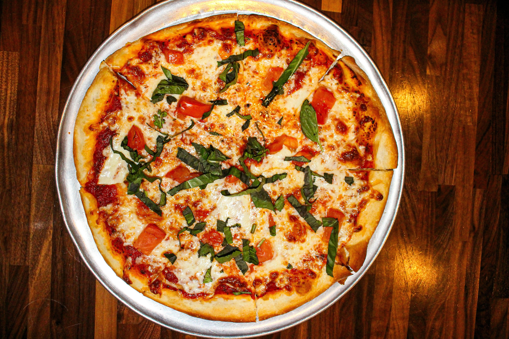

Home
Margherita Pizza

Description
Pizza Margherita is the quintessential Italian classic, named in honor of Queen Margherita of Savoy. It celebrates the colors of the Italian flag using simple, fresh, and high-quality ingredients: red tomato sauce, creamy white mozzarella, and fragrant green basil leaves.
Baked at high heat to achieve a light, airy, and blistered crust, this pizza highlights the pure flavor of crushed tomatoes and melted cheese, finished with a bright aroma of fresh herbs and olive oil.
Ingredients
- 1 ball of pizza dough
- 1/2 cup crushed San Marzano or plum tomato sauce
- 200 g (7 oz) fresh mozzarella cheese (or fior di latte), sliced or torn
- Fresh basil leaves
- 2 tablespoons extra virgin olive oil
- A pinch of salt
Steps
- Preheat the oven: Heat your oven to 240°C (475°F) or its maximum temperature.
- Shape the dough: Stretch the pizza dough by hand on a lightly floured surface into a 30 cm (12-inch) round circle, pushing air toward the outer rim to form the crust.
- Spread the sauce: Transfer the dough to a baking pan or peel and spoon the tomato sauce across the center, spreading outward in spiral motions and leaving the edges clear. Season with a light pinch of salt.
- Distribute the mozzarella: Place the torn pieces of fresh mozzarella evenly over the sauce.
- Drizzle oil: Drizzle a tablespoon of extra virgin olive oil across the cheese and sauce.
- Bake: Bake for 10 to 12 minutes until the crust is puffed and golden brown and the cheese is fully melted.
- Add basil and serve: Remove the pizza from the oven, scatter fresh basil leaves on top immediately, drizzle with the remaining olive oil, slice, and serve hot.